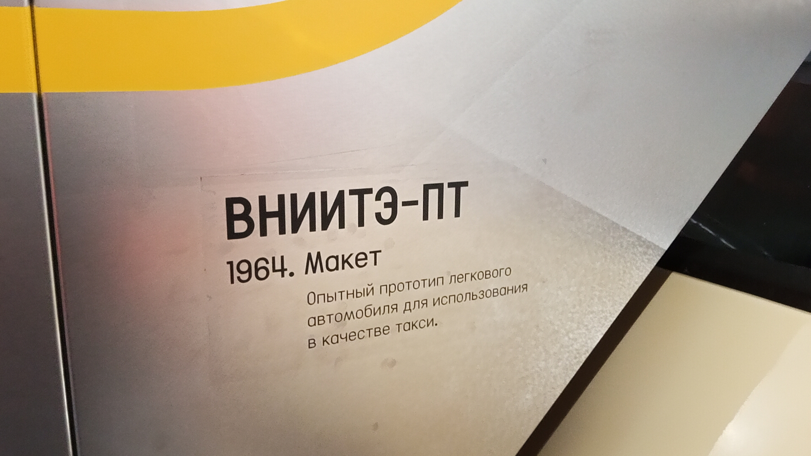

ВНИИТЭ-ПТ
ВНИИТЭ-ПТ («Перспективное Такси») — концептуальный советский легковой автомобиль, специализированное такси. Разработан в 1964 году группой конструкторов под руководством Юрия Долматовского во Всесоюзном научно-исследовательском институте технической эстетики (ВНИИТЭ).
Автомобиль отличался авангардным для своего времени экстерьером и передовыми конструктивными решениями. Кузов состоял из стеклопластиковых панелей, закреплённых на пространственном стальном каркасе. В задней части располагался двигатель «Москвич-408» мощностью 45 л.с., а радиатор системы охлаждения находился спереди. В салоне с комфортом могли разместиться четверо пассажиров с багажом, а широкая дверь с электроприводом позволяла беспрепятственно завозить детскую коляску.
Основные данные
| Модель | ВНИИТЭ-ПТ |
| Разработчик | ВНИИТЭ (Всесоюзный научно-исследовательский институт технической эстетики) |
| Руководитель проекта | Юрий Долматовский |
| Год выпуска | 1964 |
| Тип кузова | 2-дверный минивэн (5-местный) |
| Компоновка | Заднемоторная, заднеприводная |
| Двигатель | «Москвич-408», 1.4 л, 45–50 л.с. |
| Текущее состояние | Не эксплуатируется (музейный макет) |
История
Предпосылки создания
Советские специалисты установили, что условия работы такси в корне отличаются от обычных легковых автомобилей. Для таксомоторной службы требовался особый автомобиль — по компоновке тяготеющий к автобусам, надёжный, компактный и манёвренный, с ровным полом, внутренним багажником, широкими дверями и отдельной кабиной водителя.
Постановление Совета Министров
Вышло постановление о создании специализированного автомобиля для таксомоторной службы. Проект был поручен ВНИИТЭ, где к тому времени работал Юрий Долматовский — сторонник вагонной компоновки с задним расположением двигателя.
Постройка прототипа
Единственный образец такси прошёл эксплуатационные испытания на московских улицах и был передан в 1-й таксомоторный парк Москвы. Автомобиль получил высокие оценки пассажиров и положительные отзывы в прессе. Рассматривались планы серийного выпуска на ЕрАЗе.
Испытания и отказ от производства
Летом 1965 года машина прошла автопробег по маршруту Москва — Ленинград — Таллинн — Рига — Каунас — Вильнюс — Минск — Москва протяжённостью свыше 3000 километров. Однако массовое производство так и не начали. Стеклопластиковый кузов оказался сложным для советской промышленности, дверь с электроприводом показала недостаточную надёжность, а агрегаты «Москвича» не выдерживали таксомоторного режима.
В экспозиции музея
Специально для постоянной экспозиции Музея Транспорта Москвы был создан макет ВНИИТЭ-ПТ, воссоздающий облик этого инновационного такси. Оригинальный единственный экземпляр находится в Государственном Военно-техническом музее в Черноголовке.
Интересные факты
Авангардный дизайн: ВНИИТЭ-ПТ имел фары, «прячущиеся» за поднимающимся вверх щитком, и чернёные рамки боковых стёкол с центральной стойкой крыши. По длине и ширине автомобиль был близок к «Жигулям», а по высоте — к «Ниве».
Инновации для пассажиров: Салон был отделён от кабины водителя прозрачной перегородкой. Пассажир, войдя в салон, нажимал кнопку переговорного устройства и сообщал водителю маршрут поездки. Пол был ровным, без выступов, а сиденья — трансформируемыми.
Фотогалерея

Бежевый концептуальный минивэн с открытой сдвижной дверью.

Описание модели.
Нажмите на фото для увеличения
«В автомобиле сочетались высокие технические характеристики и удобство для пассажиров. Теперь эта модель пополнила коллекцию Музея транспорта Москвы».